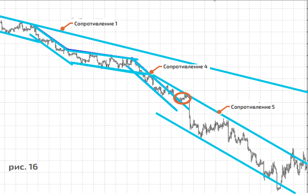

7 способов заработка на рынке форекс
Совет 1 - Определите тренд
Простота – неотъемлемое свойство всех эффективных методов! На самом деле, для того чтобы получать стабильнуюприбыль на рынке FOREX, необходимо придерживаться простого старого правила технического анализа – торговать по тренду. Безусловно, есть техники, которые утверждают, что можно торговать в любом направлении независимо от общей картины. Однако мы сконцентрируемся на правилах, которые обеспечат вам стабильныйдоход и сберегут ваш депозит.
Итак, прежде чем открывать сделку, необходимо определить текущий тренд по выбранной вами валютной паре. Тренд — это устойчивое движение цены в определенном направлении. Существуют два основных направления движения. Тренд бывает бычий, и в таком случае мы наблюдаем рост цены, и медвежий, при котором цена валюты падает. Существует также третий тип движения цены, хотя лично я не склонен относить его не к трендам. По мне, это часть общего направления – флэт, или «боковик». Также стоит отметить один немаловажный факт: чтобы констатировать наличие тренда, необходимо соблюдение некоторых условий, которые мы с вами рассмотрим на рисунке 1.
На рисунке 1 изображена схема того, что трендом не является, поскольку не выполнено одно важное условие. В тренде каждый последующий максимум и минимум должны быть либо выше, либо, соответственно, ниже предыдущего, в зависимости от типа тренда, чтобы появилась технически обоснованная точка входа в сделку. В данном случае МАХ2 не превосходит МАХ1, а это значит, что в точке MIN3 открывать сделку на покупку будет ошибкой.

На рисунке 2 изображена классическая схема восходящего тренда, где все последующие МАХ и MIN располагаются выше предыдущих значений. В таком случае рекомендовано открыть сделку на покупку в точке MIN3.
Бычий тренд
Каждый последующий максимум и минимум цены находится выше предыдущего.

Этот тип движения цены отличается тем, что каждый последующий максимум и минимум цены находится выше предыдущего, что и будет являться классическим определением восходящего тренда.
Медвежий тренд
Каждый последующий максимум и минимум цены находится ниже предыдущего.
На рисунке 4 приведен схематичный пример нисходящего тренда, когда каждый последующий максимум и минимум цены находится ниже предыдущего.
Флэт или боковик
Сложно определить какой-либо тренд
В этом случае, как правило, сложно определить какой-либо тренд, бычий или медвежий. Если вы затрудняетесь с определением тренда, то, скорее всего перед вами обычный «боковик», или, как его называют чаще, период консолидации цены. Необходимо учитывать еще и тот факт, что «боковики» могут появляться тогда, когда рынок готов к развороту. Но порой они, наоборот, представляют собой «передышку», короткую остановку существующего тренда, и после некоторого бокового движения тренд может продолжиться
Мы плавно переходим к важному аспекту технического анализа, который называется принципом вложенности. В зависимости от того, какой временной интервал вы рассматриваете, будет иметь место следующий факт. В долгосрочном тренде, который можно наблюдать на дневном интервале/D1, можно четко разглядеть бычье направление движения, однако, внутри этого тренда вы можете с легкостью найти медвежьи тренды. Они будут носить характер коррекции.
На рисунке 6, слева показан график пары EUR/USD на недельном интервале/W1. Падение валютной пары продолжалось 32 недели подряд, после чего последовал отскок, длившийся две недели – последние две свечи бычьи. В правой части рисунка изображен дневной интервал/D1 для этой же валютной пары, за аналогичный период времени. Это график уже позволяет нам построить технические линии поддержки и сопротивления нисходящего тренда, что упрощает анализ
На рис.7 мы видим уже четырехчасовой интервал/H4 все той же пары EUR/USD, однако отскок, который на недельном интервале/W1 просматривался в виде двух бычьих свечей, сейчас вырисовывается как возможный краткосрочный бычий тренд. Итог: Мы рассмотрели три временных интервала и определили, что на недельном/W1 и дневном/D1 интервалах валютная пара EUR/USD находится в нисходящем тренде, но на интервале H4 вырисовывается краткосрочный бычий тренд. Это и есть принцип вложенности.
ВАЖНО!!!
Определите для себя основной временной интервал, используемый в
торговле. Вы будете открывать свои торговые позиции, ориентируясь
на сигналы в этом интервале. Традиционно это D1 и Н4. Я бы
рекомендовал взять за основу один из старших временных интервалов
– дневной/D1.
Что ж, полдела сделано. Вы определили для себя интервал, построили
линии поддержки и сопротивления, выявили тип тренда и теперь
готовы к открытию сделки. При растущем/бычьем тренде мы должны
совершать покупки и только покупки, а при медвежьем тренде – только
продажи! Как бы банально это ни звучало, но начинающие трейдеры
очень редко придерживаются данного правила. В дальнейшем я приведу
еще ряд фактов, благодаря которым будет очевидно, что торговля по
тренду – это наиболее прибыльное дело. Даже если вы несколько
поспешите с открытием сделки, в случае если вы торгуете в
направлении тренда, он все равно рано или поздно вытянет вашу
торговую позицию в плюс.
Совет 2 - Точка входа
Чтобы сделки приносили прибыль и удовольствие, необходимо определить для себя, в какой именно точке вы будете открывать позицию. С помощью линий поддержки и сопротивления можно найти оптимальную точку входа, однако, тут тоже стоит иметь в виду несколько простых условий. Для начала запомните, что трендовые линии, по большей части, указывают вам направление и возможный диапазон цен для открытия торговой позиции. Строить их я бы рекомендовал по двум принципам.
Принцип первый
Соедините между собой тени свечей. Задача состоит в том, чтобы построить линию тренда, соединив максимумы и минимумы цены. Для этого нужно провести линии через тени, или хвосты, свечей. Если вы убедились, что каждый последующий минимум цены выше предыдущего и максимумы также превосходят друг друга, то это восходящий тренд (рис. 8). В таком случае вы должны соединить между собой MIN1 и MIN2 линией, которая в данном примере будет называться линией поддержки. В точке, где происходит соприкосновение графика цены и линии поддержки, вы должны открывать сделки на покупку. По такому же принципу вы строите линию сопротивления, проводя ее через максимумы цены.
На рисунке 9 я показываю, как строить линии сопротивления и поддержки для нисходящего тренда. Для данного типа ценового движения линия сопротивления будет основной, поэтому в точке, где происходит соприкосновение графика цены и линии сопротивления, вы должны открывать сделки на продажу.
Принцип второй
После того как вы построили трендовые линии через тени свечей, постройте линии тренда через цены закрытия и открытия. Тем самым вы как бы обрежете макушки свечей
Совет 3 - Следите за траекторией
Вам не следует забывать о том, что существующий тренд не может и не будет всегда оставаться в границах, в которые вы его заключили при построении линий тренда. Рынок — это живой организм, и как все живое он будет преподносить вам сюрпризы и слегка отклоняться от заданной ранее траектории. Тренды, которые длятся от нескольких месяцев до года, просто обязаны в определенный момент времени изменить свою траекторию. Однако это не значит, что тренд перестал существовать: он по-прежнему здесь – изменился лишь угол его движения. Давайте представим траекторию мяча, который начал свое движение от бутс пнувшего его футболиста. Рано или поздно угол полета мяча изменится, и он приземлится на футбольное поле. После нескольких отскоков он просто покатится по земле.
Трейдер обязан следить за траекторией тренда и корректировать свои линии поддержки и сопротивления. Тем самым он будет находить новые, более удобные точки входа в данный момент времени. Сигналом того, что тренд изменил траекторию, являются ложные пробои и проколы графиком цены линии тренда. Как только произошел такой ложный пробой или прокол, образуется новый минимум или максимум. Используйте его для корректировки старых или построения новых линий тренда.
Такая комбинация даст вам диапазоны для открытия торговой позиции. Ведь цена совершенно ничего вам не должна, и именно поэтому часто бывает, что график цены не доходит до построенной вами линии тренда или же несколько превосходит ее. Такие случаи могут смутить начинающего трейдера. Но ценовые диапазоны помогут вам понять, что время для открытия сделки пришло.
Как быть если график цены несколько пробил вашу линию тренда? Входить ли в
сделку или стоит воздержаться от открытия позиции?
Если на старшем временном интервале вы определили начало тренда и торгуете
в его направлении, то небольшое пробитие графиком цены вашей технической
линии не должно удерживать вас от заключения сделки. Помните: тренд ваш
друг, поэтому следуйте за ним, и вас ждет успех!
Такая комбинация даст вам диапазоны для открытия торговой позиции. Ведь цена совершенно ничего вам не должна, и именно поэтому часто бывает, что график цены не доходит до построенной вами линии тренда или же несколько превосходит ее. Такие случаи могут смутить начинающего трейдера. Но ценовые диапазоны помогут вам понять, что время для открытия сделки пришло.
Как быть если график цены несколько пробил вашу линию тренда?
Входить ли в сделку или стоит воздержаться от открытия позиции?
Если на старшем временном интервале вы определили начало тренда и торгуете
в его направлении, то небольшое пробитие графиком цены вашей технической
линии не должно удерживать вас от заключения сделки. Помните: тренд ваш
друг, поэтому следуйте за ним, и вас ждет успех!

На рисунке 12 изображено начало медвежьего тренда; построены линии сопротивления и поддержки через максимумы и минимумы цены. Когда цена отскочила от линии сопротивления в третий раз, ее движение несколько замедлилось у линии поддержки, после формирования MIN2.
После того как цена сформировала MIN2, ее движение несколько замедлилось, а затем произошел ложный прокол и пробой линии поддержки нисходящего тренда. Это и был сигнал на корректировку технической линии сопротивления 1. Новые минимумы позволили выстроить еще один тренд внутри существующего, а это дало нам новые точки входа в сделку в соответствии с линией сопротивления 2
На рисунке 14 видно, как постепенно была пробита линия сопротивления 2, что привело к появлению линий поддержки и сопротивления 3. Это, в свою очередь, помогло в дальнейшем найти наиболее корректные точки входа в сделку: короткие позиции открывались, когда график цены подходил к линии сопротивления 3. Также стоит отметить, что изменение траектории тренда не должно вызывать сомнений в его устойчивости, ведь основная линия сопротивления 1 так и не была пробита: цена лишь изменила угол

Впоследствии линия поддержки 3 была пробита, и цена ускорила свое падение. После пробоя линии поддержки 3 образовались новые минимумы и максимумы, которые позволили выстроить еще один нисходящий тренд с сопротивлением и поддержкой 4, в рамках уже существующего глобального падения.

Как нередко бывает, цена вновь изменила свою траекторию (смотрите рисунок 16). Линия сопротивления 4 была пробита, однако, нисходящий тренд продолжился. Более того – интенсивность падения увеличилась! Построение линии сопротивления 5 дало возможность определить еще несколько точек для входа на рынок с целью продажи евро. Это позволило бы вам сполна использовать резкое падение и значительно увеличить свой депозит за счет длительного удержания торговой позиции
Совет 4 - Используйте индикаторы
Если честно, я не люблю загромождать график цены кучей различных индикаторов, поскольку это может затуманить взгляд и просто засорит график. В итоге, вероятность неверных торговых решений повысится. Цена и так содержит в себе всю необходимую информацию, а свечи и их тени в различных комбинациях дают дополнительные подсказки. Однако бывают случаи, когда индикаторы могут сослужить хорошую службу. Мы остановимся на самых простых и эффективных индикаторах, которые не будут идти вразрез с ранее изложенными мыслями. Хочу отметить, что я еще не встречал успешных трейдеров, которые принимали бы решения на основе большого числа разнообразных индикаторов. Как правило, трейдеры со стажем и успешной торговой историей используют не более 2-3 индикаторов. Я же предложу вам один единственный инструмент, но в нескольких вариациях. Речь пойдет о самом распространенном и простом трендовом индикаторе.
Мы с вами поговорим о скользящих средних (moving average), а точнее, об их модификации – экспоненциально сглаженных скользящих средних (ЕМА). Подчеркну, что это трендовый индикатор, который указывает нам на направление тренда в данный момент времени. Скользящие средние работают как линии поддержки и сопротивления. Более того, это их свойство очень ярко проявляется в случае выраженных трендов. Можно утверждать, что оно является их неоспоримым плюсом. Поэтому я бы посоветовал использовать скользящие средние только таким образом, то есть как линии тренда. Однако не стоит впадать в нирвану и надеяться на то, что это правило будет работать всегда. Вы должны понимать и помнить о том, что любые тренды рано или поздно заканчиваются. Так что не расслабляйтесь, поскольку индикатор, несмотря на всю устойчивость сигналов, в определенный момент может дать сбой. От этого никто не застрахован, но статистический анализ говорит о том, что при выраженных трендах сигналы скользящих средних надежны и верны. В процентном соотношении количество верных сигналов заметно перекрывает число ложных.
Бычий тренд, определенный по скользящим средним
ЕМА направлены вверх и почти параллельны друг другу, а цена оказалась над ЕМА. Мы покупаем при очередном подходе графика цены к скользящей средней, то есть ждем соприкосновение графика цены и индикатора.
Медвежий тренд, определенный по скользящим средним
ЕМА направлены вниз и почти параллельны друг другу, а цена оказалась под ЕМА. Мы продаем при очередном подходе графика цены к скользящей средней.
Я рассказал вам о том, как этот индикатор использовали с момента его изобретения. Следовательно, я не открыл для вас Америку, а лишь посоветовал использовать сигналы, получаемые от скользящих средних, чтобы найти лучшую точку входа. Ведь не секрет, что время от времени цена не доходит до построенной нами линии поддержки или сопротивления. В случае использования скользящих средних, мы увеличиваем количество входов на рынок, потому что получаем больше точных сигналов.
ВАЖНО!!!
ЕМА необходимо использовать в сочетании с классическим
теханализом: они подтверждают правильность построенных ранее
линий тренда (поддержки и сопротивления). При оценке тренда также
нужно учитывать данные фундаментального анализа, речь о котором
пойдет позже. Ваша задача заключается в том, чтобы торговать по
тренду. Для этого требуется правильно определить тренд с помощью
индикаторов, технического и фундаментального анализа. Прежде чем
открывать позицию, убедитесь, что все три метода говорят об одном
и том же
«Серия сделок будет успешной лишь в том случае,
если индикаторы, линии поддержки и
сопротивления, а также данные
фундаментального анализа говорят
об одном и том же».
Торговая платформа Metatrader 4, которую вы можете скачать, если
откроете счет в компании STForex, как нельзя лучше подходит для
построения линий поддержки и сопротивления, а также скользящих
средних. На это у вас будет уходить всего несколько мгновений. Кроме
того, в программе доступны десятки других технических индикаторов
для тех, кто любит экспериментировать. Торговая платформа Metatrader 4 с интуитивно понятным интерфейсом
содержит все, что
необходимо для успешного трейдинга.
Комбинация скользящих средних
Итак, мы наносим на график цены две скользящие средние (ЕМА) с периодами 13 и 55. Сразу отмечу, что для данного индикатора не существует универсального периода. Я предлагаю вам те периоды, которые дают хорошие сигналы на большинстве валютных пар. Эти периоды проверены собственным статистическим анализом. Предложенную комбинацию скользящих средних необходимо использовать потому, что периодически цена не доходит или же ложно пробивает некоторые технические уровни. Предположим, вы определили тренд и совершаете сделки в его направлении, используя одну скользящую среднюю с периодом 13. Это быстрая скользящая средняя, которая находится достаточно близко к цене. Однако в определенный момент времени, когда волатильность начинает расти, цена может ложно проколоть скользящую среднюю и уйти на другие уровни. В ряде случаев вы можете получить убыток, поскольку расположили stop loss близко к цене или же в принципе торговали без «стопа» и после пробития скользящей средней поспешили закрыть сделку с убытком. Но благодаря дополнительному уровню, которым вас снабжает более медленная скользящая ЕМА 55, вы сумеете определить те ценовые уровни, к которым цена может приблизиться при росте волатильности. В таком случае вы расположите стоп более грамотно и пересидите момент волатильности или даже усреднитесь по ходу движения цены.
На рисунке показано, как в четырех случаях пробоя быстрой скользящей средней (ЕМА13) снизу-вверх цена отскакивала от более медленной скользящей средней (ЕМА55) и продолжала падение.
Пересечение скользящих средних
В ряде литературных источников можно встретить еще один сигнал, который генерируют скользящие средние – пересечение. Предположим, вы используете комбинацию из двух скользящих средних и в какой-то момент видите, что они сплетаются в косичку (рис.20). В этом случае я бы рекомендовал не использовать их как инструменты, которые подают сигналы о входе в рынок. Дело в том, что рынок, с технической точки зрения, в такие периоды находится во флэте, то есть движется без ярко выраженных бычьих или медвежьих тенденций. Сигналы скользящих средних в такие периоды работают плохо, так что в этот момент лучше используйте иные инструменты для определения точки входа.
Совет 5 - Взвешивайте процентные ставки
Открою вам секрет: тренды не берутся из ниоткуда, но формируются под
влиянием целого ряда макроэкономических факторов. Эти факторы, в свою
очередь, воздействуют на перераспределение потоков капитала. Крупные
инвестиционные банки и фонды, а также коммерческие банки и частные
инвесторы направляют свои капиталы туда, где можно получить наибольший
доход.
Банковская система любой страны принимает депозиты под определенные
проценты. Отметим сразу, что изменение процентной ставки ЦБ (ставки
рефинансирования) определяет доходность депозитов в коммерческих банках.
Чем выше ставка ЦБ, тем выше ставка по депозиту в коммерческом банке. Кроме
того, правительства различных стран совершают займы, выпуская
государственные ценные бумаги и предлагая инвесторам определенный
процент.
Инвесторы будут размещать свои капиталы в коммерческих
банках с более высокой ставкой по депозитам. Они также будут
вкладывать средства в более доходные государственные
ценные бумаги, порождая спрос на соответствующую валюту.
Поскольку государственные ценные бумаги номинированы, как правило, в
национальной валюте, то для приобретения ценных бумаг или других
инструментов (примером которых могут служить депозиты в банках)
необходимо купить соответствующую валюту.
Именно из-за разницы в процентных ставках двух Центробанков, на ценовых
графиках валютных пар возникают устойчивые движения, которые мы называем
трендами.
Разница в процентных ставках ЦБ разных стран называется
дифференциалом.
Мониторинг деятельности ЦБ является важнейшим элементом
фундаментального анализа и источником информации о состоянии и
направлении текущего тренда. В последние 5-7 лет именно действия мировых
ЦБ формировали долгосрочные тренды на FOREX, и я убежден, что политика
валютных войн в значительной мере определит будущий облик рынка
Совет 6 - Следите за показателям
Существует мнение, что фундаментальный анализ рынка — это работа с новостями и на новостях. Отмечу, что данное мнение ошибочно! Торговля на новостях — это определенная тактика поведения на рынке, с выставлением отложенных ордеров и т. д. По сути, торговля на новостях — это поиск волатильности; здесь даже не нужно анализировать значения того или иного макроэкономического показателя. Толкование новости тоже не есть фундаментальный анализ, а всего лишь констатация факта, то есть комментарий вышедшей новости. Пример: уровень безработицы в США вырос, и поэтому американский доллар упал. Не так уж сложно, согласитесь?!
Что такое макростатистка?
Макростатистика – публикации макроэкономических показателей в виде отчетов правительства или независимых организаций. Эти отчеты содержат подробные сведения о состоянии национальной экономики, которое отражается в улучшении или ухудшении показателей. Показатели публикуются в определенное время и являются непосредственным ориентиром для рынка. Экономические календари включают списки обновляемых статистических показателей по дням недели и странам мира. Ежедневно мы получаем информацию из различных секторов экономики, данные по инфляции, промышленному сектору, рынку недвижимости, состоянию банковского сектора и т.д. Пытаясь удержать всю эту информацию в голове, вы быстро запутаетесь в массе различных данных и разовьете отвращение ко всему, что связано с экономикой и фундаментальным анализом.
Так, что же такое фундаментальный анализ?
Я предлагаю вам собственный взгляд на фундаментальный анализ и надеюсь,
что он вас заинтригует.
Для того чтобы работа не была источником замешательства и доставляла вам
удовольствие, я систематизировал основные макроэкономические показатели в
виде таблицы. Она поможет вам определить главные тенденции в экономике
конкретной страны и, конечно же, принять верное рыночное решение. Благодаря
правильному использованию теханализа, предложенных мной индикаторов и
таблицы, ваш счет непременно вырастет.
Этот систематизированный набор данных поможет вам определить текущий
тренд, опираясь на экономические показатели, и спрогнозировать будущие
тенденции, которые средства теханализа просто не обнаружат или определят с
опозданием. Так вы сможете собрать пазл, который состоит из сигналов
индикаторов, теханализа и фундаментальных аспектов.
Итак, мы уже определили, что тренды на рынке формируются под влиянием
Центробанков. Именно ЦБ определяют стоимость денег, а это, в свою очередь,
обуславливает будущие потоки капитала, то есть тренды. Значит для того, чтобы
верно оценить текущие потоки и спрогнозировать возможные изменения,
необходимо следить за действиями ЦБ. Определяя свою политику, ЦБ опирается
на поступающую макростатистику. Если ситуация в экономике ухудшается,
Центробанк принимает определенные меры по ее оздоровлению, используя
имеющиеся у него механизмы. К механизмам ЦБ, или инструментам
денежно-кредитной политики, относятся, например, повышение или понижение
основной процентной ставки, изменение норм обязательного банковского
резервирования, а также применение нетрадиционных мер стимулирования
(таких как программы количественного смягчения, известные как программы
QE). Давайте остановимся на ставке рефинансирования и программах QE
подробнее.
Предлагаю рассмотреть, как Центробанки различных стран используют
инструменты денежно-кредитной политики. Для примера возьмем
американский ЦБ (ФРС) во время разбушевавшегося в 2008 году кризиса.
Основные макроэкономические показатели в период с 2008 по 2009 годы очень
четко указывали на наличие в США глубокого кризиса. К основным показателям
я отношу данные по инфляции (индекс СРI), уровень безработицы и ВВП.
В октябре 2008 года инфляция (индекс СPI) упала до отрицательных значений и
составила -0,1%. Во 2-м квартале 2009 года в область отрицательных значений
ушел и основной показатель экономической активности (ВВП), значение
которого достигло -6,4%. К октябрю 2009 года уровень безработицы составил
10,2%, хотя еще в феврале 2008 года он находился на отметке 4,8%.
Для борьбы с кризисом ФРС на протяжении 7 лет использовала крайне низкую
процентную ставку 0-0,25%, а также применяла трехраундовую программу
количественного смягчения (QЕ – quantitative easing). Проще говоря, ФРС
печатала доллары в три этапа на общую сумму свыше 5 трлн долларов.
В момент понижения основной процентной ставки до уровня 0-0,25%
американский доллар ослаб ко всем валютным парам. Также отметим, что
глобальное падение доллара наблюдалось на каждом из трех этапов программы
количественного смягчения.
Этапы программы QE
QQЕ1 - с ноября 2008 года до конца 2009 года
QЕ2 - с ноября 2010 года до июня 2011 года
QE3 – с сентября 2012 года до конца 2014 года
СОВЕТ!!!
Держите в поле зрения лишь наиболее важную статистику и будьте
внимательны к заявлениям глав ЦБ. Читайте между строк. Главы ЦБ в своих
докладах и пресс-конференциях комментируют текущие значения основных
показателей (СРI, безработица, ВВП). Это помогает определить их будущие
действия и торговать с прибылью! Чтобы ваша прибыль была еще больше,
рекомендую открыть торговый счет уровня «Pro», спред на котором
составляет от 0,3 пункта. Это идеальный вариант для профессиональных
трейдеров, желающих иметь прямой доступ на межбанковский валютный
рынок.
Совет 7 - Систематизируйте собранные данные
Как пользоваться таблицей?
Первые два столбца содержат названия стран и ЦБ. Два следующих отражают те
инструменты денежно-кредитной политики, которые использует тот или иной
ЦБ. Три последних столбца знакомят вас с основными макроэкономическими
показателями, на которые регулярно ссылаются председатели ЦБ в своих
пресс-релизах и конференциях.
Итак, если мы видим, что экономические показатели в стране далеки от
желаемых – предположим, долгое время сохраняется высокий уровень
безработицы, стабильно низкий уровень потребительских цен (индекс СРI) и, как
результат, низкий уровень ВВП – в таком случае нужно посмотреть, какие
инструменты использует ЦБ в настоящий момент. Вероятнее всего, при таких
слабых экономических показателях мы увидим, что ЦБ не задействовал все
возможные инструменты для поддержания экономического роста. Значит
необходимо сконцентрировать все внимание на том, какую информацию
передает рынкам председатель конкретного Центробанка.
Исходя из опыта последних нескольких лет, можно утверждать, что в такой
ситуации ЦБ будет неоднократно упоминать о своей готовности принять любые
меры, дабы стабилизировать ситуацию. Важно понимать одну простую вещь:
любые стимулирующие меры Центробанка будут давить на курс национальной
валюты.
Рассмотрим описанную выше ситуацию на примере ЕЦБ
В июне 2014 года инфляция в Еврозоне находилась на очень низком уровне 0,7%.
Стоит отметить, что мировые Центробанки в качестве целевого уровня
инфляции, после достижения которого они могут повысить основную
процентную ставку, взяли значение в 2,0%. При столь низкой инфляции, ВВП в
зоне евро по итогам 2-го квартала составлял 0,2%, а уровень безработицы
буквально застыл на отметке в 11,8%. Кстати, до кризиса уровень безработицы в
зоне евро не превышал 8%.
Для того чтобы исправить ситуацию, ЕЦБ пошел на понижение основной
процентной ставки до рекордного уровня 0,05%, после чего взял паузу на один
квартал, чтобы оценить принятые меры. Однако после понижения ставки до
0,05% ситуация не улучшилась. Более того, инфляция начала снижаться еще
быстрее. В такой ситуации было очевидно, что европейскому регулятору не
удастся обойти стороной программы количественного смягчения. В январе 2015
года ЕЦБ заявил о том, что в марте запустит свой аналог американской
программы QЕ. Для большинства экспертов, следящих за экономическими
показателями, это не стало сюрпризом.
Сопоставляя экономические данные с политикой Центробанка, можно
предвидеть его ближайшие действия, что очень пригодится в торговле. Как уже
говорилось, свои доводы всегда следует подкреплять дополнительными
инструментами технического анализа.
Действия ЦБ, а именно уровень процентных ставок и дополнительные
стимулирующие меры, определяют вектор притока капитала в национальную
валюту и государственные ценные бумаги, то есть создают тренд.
Инструменты технического анализа должны лишь подтверждать это
направление и давать вам оптимальные точки для открытия торговой позиции.
Таким образом, мы еще раз констатируем, что фундаментальный и технический
анализ не противоречат друг другу, а говорят об одном и том же.